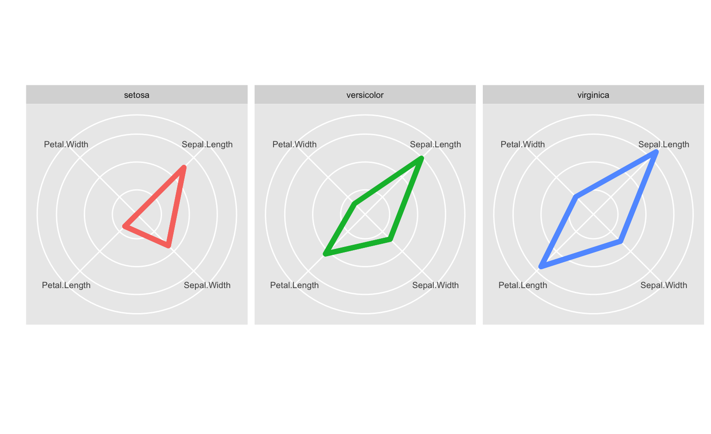
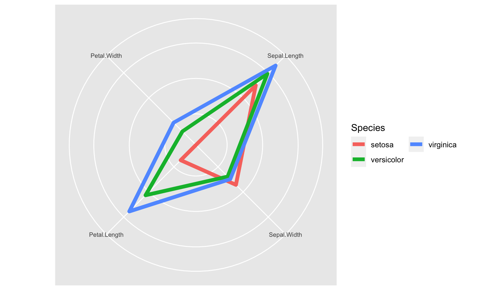

Radar plot example I

Yumou Qiu

iris data
## Sepal.Length Sepal.Width Petal.Length Petal.Width Species
## 1 5.1 3.5 1.4 0.2 setosa
## 2 4.9 3.0 1.4 0.2 setosa
## 3 4.7 3.2 1.3 0.2 setosa
## 4 4.6 3.1 1.5 0.2 setosa
## 5 5.0 3.6 1.4 0.2 setosa
## 6 5.4 3.9 1.7 0.4 setosa## Sepal.Length Sepal.Width Petal.Length Petal.Width
## Min. :4.300 Min. :2.000 Min. :1.000 Min. :0.100
## 1st Qu.:5.100 1st Qu.:2.800 1st Qu.:1.600 1st Qu.:0.300
## Median :5.800 Median :3.000 Median :4.350 Median :1.300
## Mean :5.843 Mean :3.057 Mean :3.758 Mean :1.199
## 3rd Qu.:6.400 3rd Qu.:3.300 3rd Qu.:5.100 3rd Qu.:1.800
## Max. :7.900 Max. :4.400 Max. :6.900 Max. :2.500
## Species
## setosa :50
## versicolor:50
## virginica :50
##
##
## library(tidyverse)
library(reshape2)
mean.iris <-
iris %>%
group_by(Species) %>%
summarise_all("mean") %>%
melt()
coord_radar <- function (theta = "x", start = 0, direction = 1)
{
theta <- match.arg(theta, c("x", "y"))
r <- if (theta == "x")
"y"
else "x"
ggproto("CordRadar", CoordPolar, theta = theta, r = r, start = start,
direction = sign(direction),
is_linear = function(coord) TRUE)
}## Warning: Using `size` aesthetic for lines was deprecated in ggplot2 3.4.0.
## ℹ Please use `linewidth` instead.
ggplot(mean.iris, aes(x = variable, y = value)) +
geom_polygon(aes(group = Species, color = Species), fill = NA, size = 2) +
geom_line(aes(group = Species, color = Species), size = 2) +
facet_wrap(~ Species) +
theme(strip.text.x = element_text(size = rel(0.8)),
axis.text.x = element_text(size = rel(0.8)),
axis.ticks.y = element_blank(),
axis.text.y = element_blank()) +
xlab("") + ylab("") +
guides(color = "none") +
coord_radar()
ggplot(mean.iris, aes(x = variable, y = value)) +
geom_polygon(aes(group = Species, color = Species), fill = NA, size = 2, show.legend = FALSE) +
geom_line(aes(group = Species, color = Species), size = 2) +
theme(strip.text.x = element_text(size = rel(0.8)),
axis.text.x = element_text(size = rel(0.8)),
axis.ticks.y = element_blank(),
axis.text.y = element_blank()) +
xlab("") + ylab("") +
guides(color = guide_legend(ncol=2)) +
coord_radar()
For the fbi data:
California and
New York1971 and
2016State, Year and Type by the crime
rateRape and
Legacy.rape for this plot